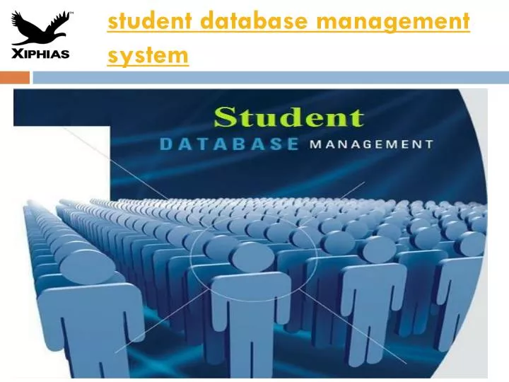

Project

Technical Skills involved: Core java and SQL
Description:
A database-management system (DBMS) is a collection of interrelated data and a set of programs to access those data. The
database contains information relevant to an enterprise. The primary goal of a DBMS is to provide a way to store and retrieve
database information that is both convenient and efficient. By data, we mean known facts that can be recorded and that have
implicit meaning. A datum – a unit of data – is a symbol or a set of symbols which is used to represent something. This
relationship between symbols and what they represent is the essence of what we mean by information. Hence, information is
interpreted data – data supplied with semantics. Knowledge refers to the practical use of information. While information can
be transported, stored or shared without many difficulties the same cannot be said about knowledge. Knowledge necessarily
involves a personal experience. Database systems are designed to manage large bodies of information. Management of data
involves both defining structures for storage of information and providing mechanisms for the manipulation of information.
In addition, the database system must ensure the safety of the information stored, despite system crashes or attempts at
unauthorized access. If data are to be shared among several users, the system must avoid possible anomalous results.
Because information is so important in most organizations, computer scientists have developed a large body of concepts and
techniques for managing data